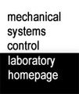

Miscellaneous
MSC LogoDownload the MSC Logo in various formats. |
|
Old PhotosPhotos of MSC Lab activities before 2008. |
|
Old MSC Lab Homepage (Before 1999)Created by Shashi. Replaced in August 1999. |
|
|  | Old MSC Lab Homepage (1999 - 2008)Created by Soichi Ibaraki and Shashikanth Suryanarayanan. Replaced in February 2009. |
Old MSC Lab Homepage (2009 - 2011)Created by Wenjie Chen. Replaced in February 2012. |